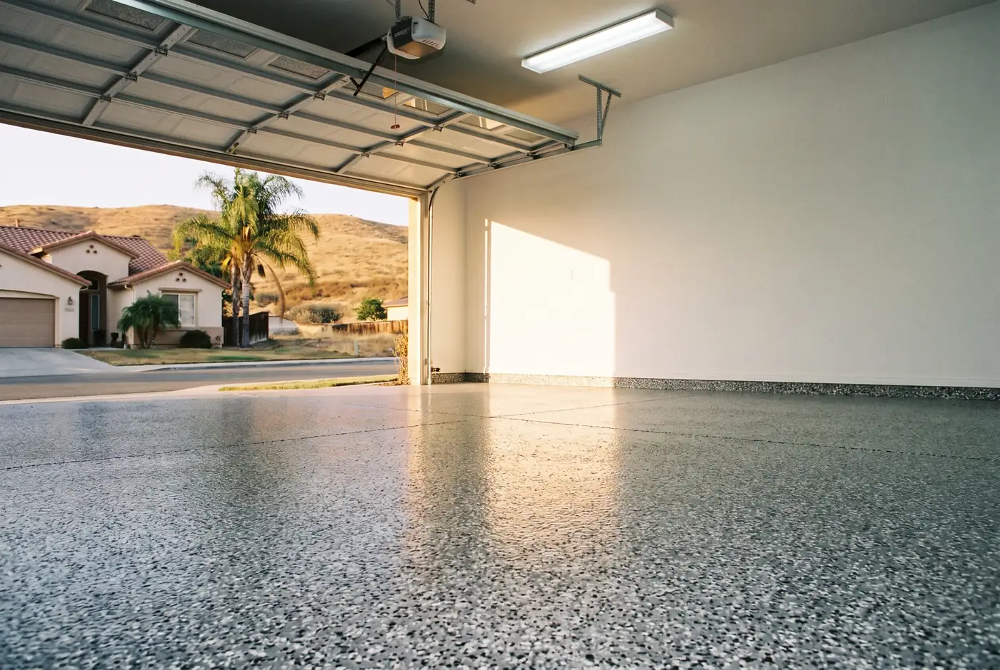
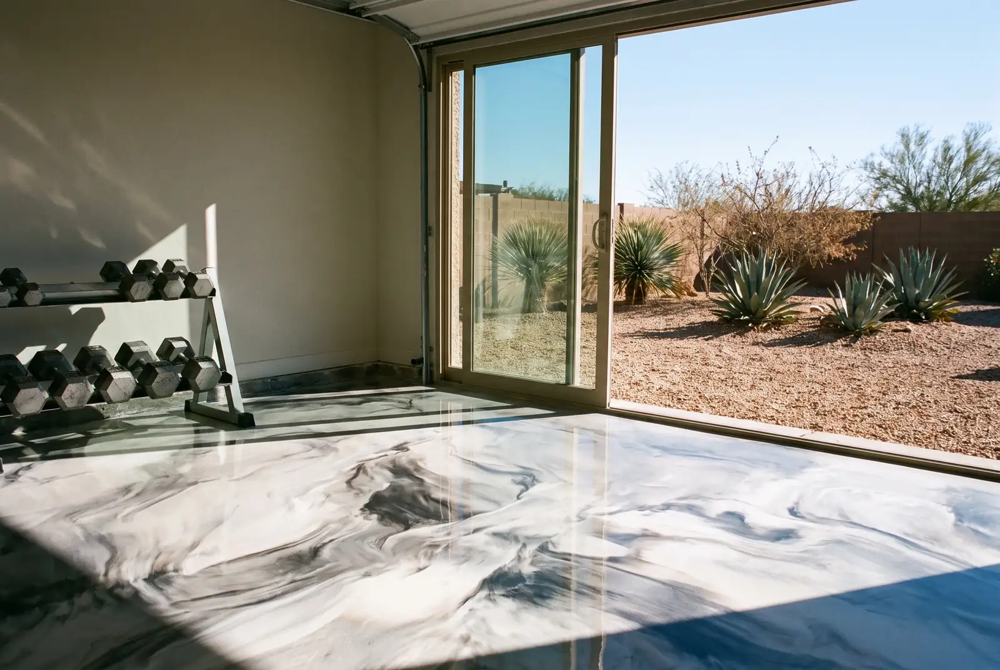
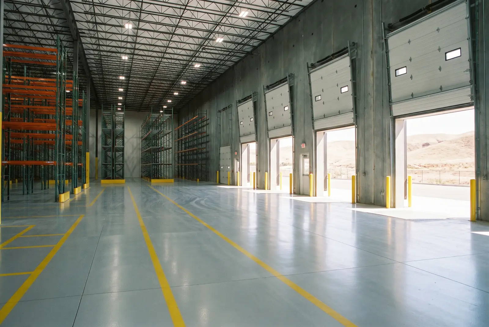

Floor Coating Services We Offer
Four coating systems, one prep standard. Every floor starts with the concrete ground open and the cracks filled.

Garage Floor Epoxy
Full-broadcast flake or solid color over a ground slab, sealed against oil, stains and hot tires.
Garage floor epoxy details
Polyaspartic Coatings
A fast-curing, UV-stable coating that is often finished in one day and will not yellow in the sun.
Polyaspartic coating details
Metallic Epoxy Floors
Pigment worked by hand while the resin is wet, giving a floor with depth and movement.
Metallic epoxy flooring details
Commercial & Warehouse
High-build coatings, joint filling and safety striping, scheduled so your operation keeps moving.
Commercial epoxy flooring details